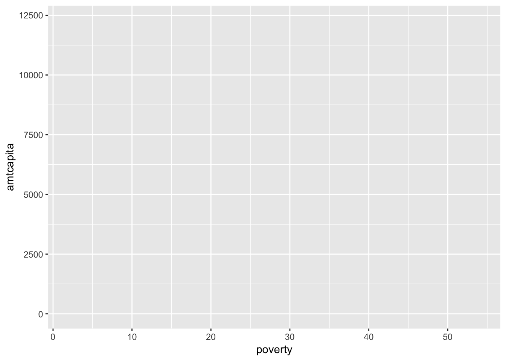
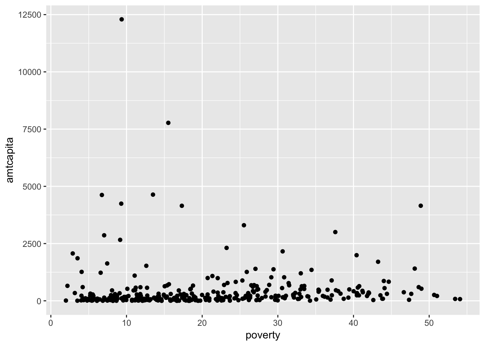
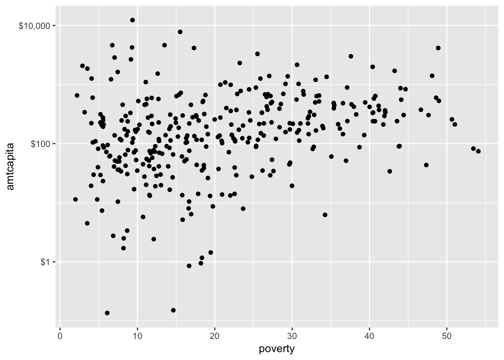
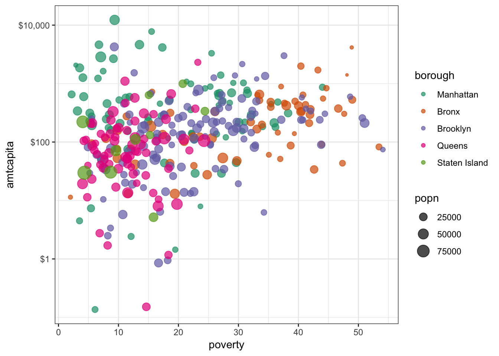
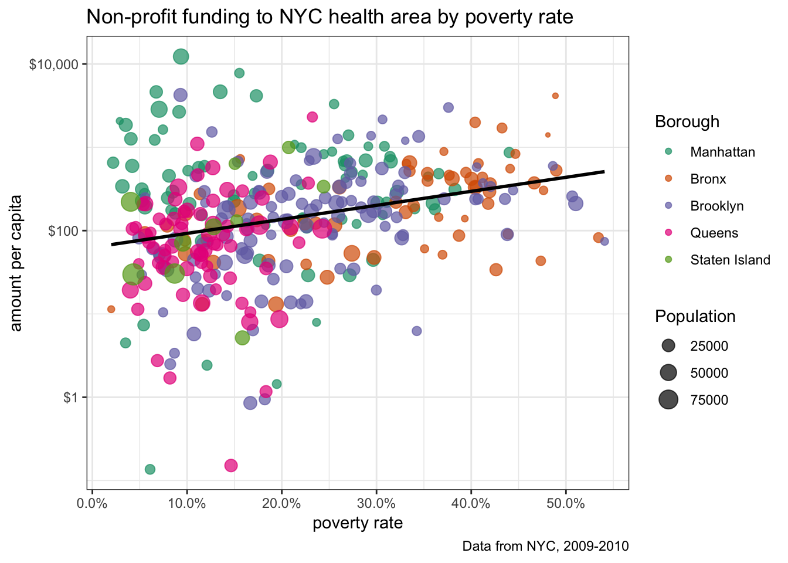
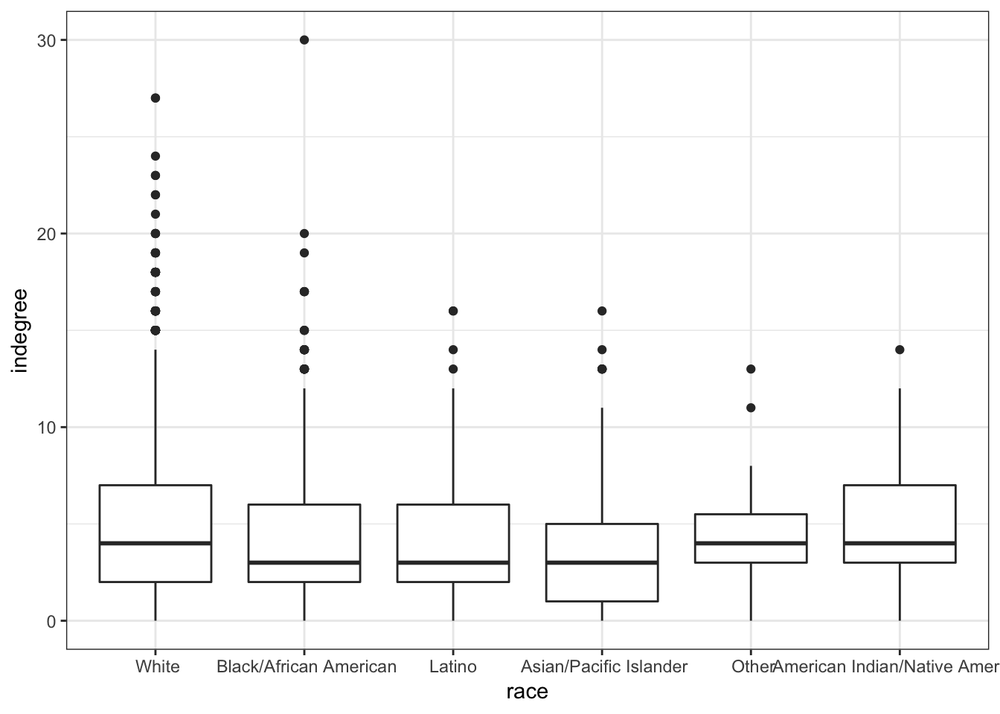
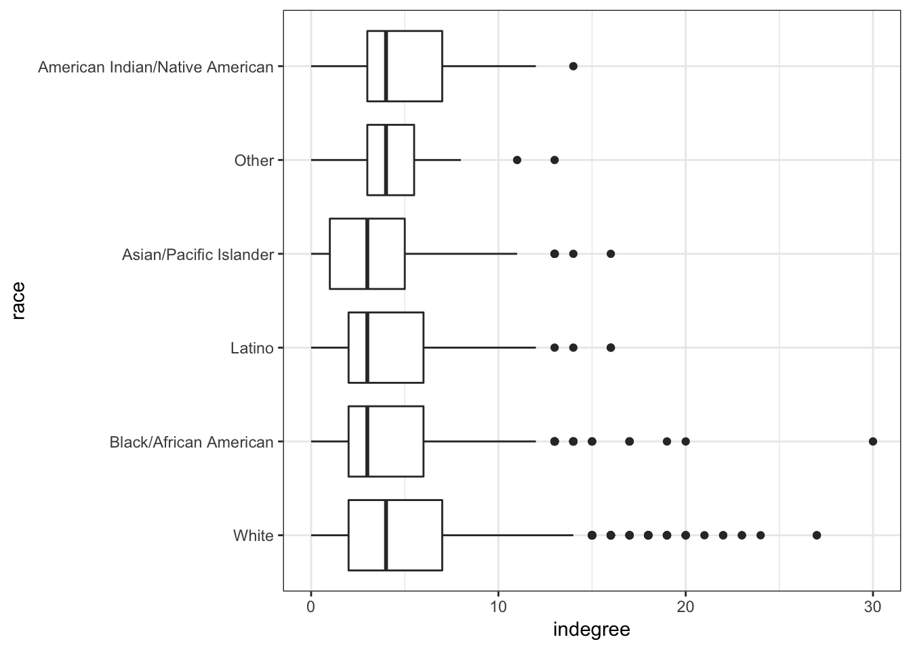
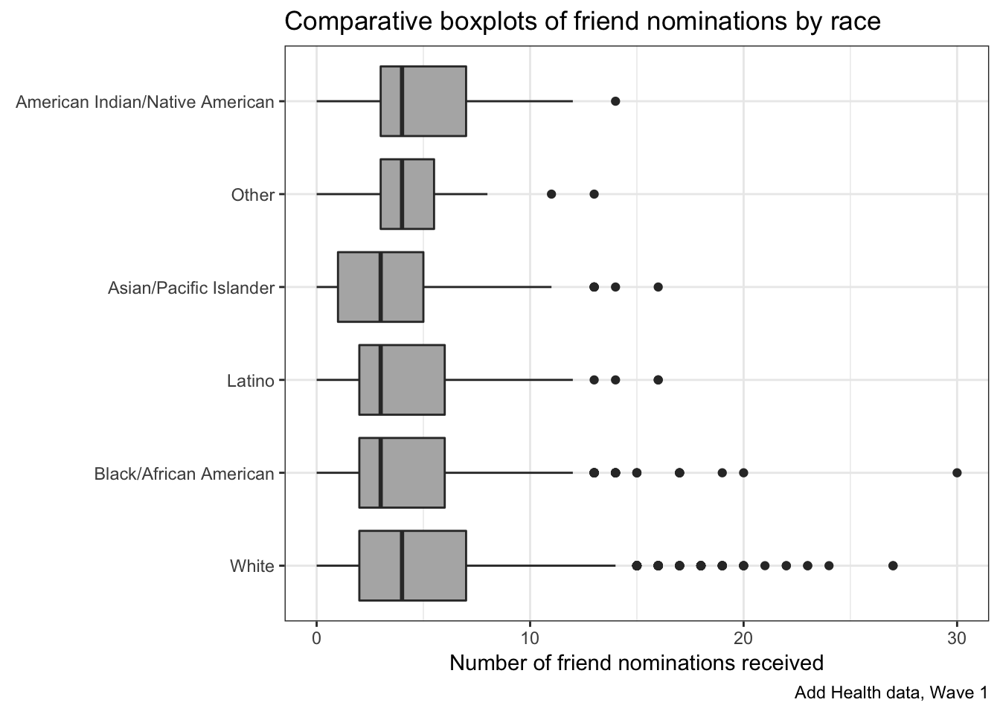
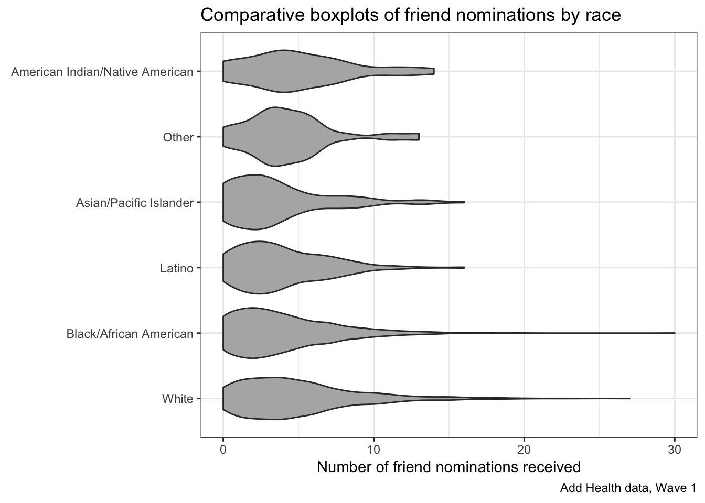

ggplot
Now, I want to show you how to plot that same scatterplot of non-profit funding in NYC using ggplot. First you will need to install ggplot and load the library:
install.packages("ggplot2", repos = "http://cran.us.r-project.org")
install.packages("scales", repos = "http://cran.us.r-project.org")
library(ggplot2)
library(scales)Ggplot builds up a graph from layers. The first and most essential component is the function ggplot where I indicate the data I am using and the aesthetics that I want to be carried through to all of the other layers:
ggplot(nyc, aes(x=poverty, y=amtcapita))
This command does not actually plot anything yet. It just sets up the basic structure of my plot by identifying the dataset and that I will use poverty as my x variable and amtcapita as my y variable. I then can add layers to this basic command using the “+” sign. For example, if I wanted to create a scatterplot by plotting points:
ggplot(nyc, aes(x=poverty, y=amtcapita))+
geom_point()
Now, I have a basic (and very ugly) scatterplot that is similar to what I started with in base plot. I can now add a variety of layers to that start to make a better graph. There are three types of layers I can add:
geoms- these are a variety of geometric patterns such as points, bars, lines, etc.- The
coordsthat define the coordinate system used to plot the values. We typically won’t futz around with this much because everything is drawn on a Cartesian coordinate system, but it can be useful for maps and some other things. scales- these indicate how I want the scales of my various aesthetics to work. This can include the scaling of my x and y variables, but also things like color gradiations.labels- I can identify labels and themes to use.
For example, let me use the scale_y_log10() function to re-scale my y-axis to a logarithmic basis:
ggplot(nyc, aes(x=poverty, y=amtcapita))+
geom_point()+
scale_y_log10(labels=dollar)
That looks better. Notice that I also gave the scale_y_log10 command an argument of labels. This argument identifies the specific labels I want to use for the tick mark. In this case, I am supplying a function from the scales library that turns raw numbers into formatted dollar amounts.
From here I can add a variety of layers and aesthetics to enrich my graph. Let me first add aesthetics for color and size. I will also tranform borough into a proper factor variable so it displays more nicelyin the legend.
ggplot(nyc, aes(x=poverty, y=amtcapita, size=popn, color=borough))+
geom_point(alpha=0.7)+
scale_y_log10(labels=dollar)+
scale_color_brewer(palette="Dark2")+
theme_bw()
By just adding in the borough and pop size as aesthetics, the graph was quickly adjusted. I didn’t have to fiddle around with exact sizing of the dots. Ggplot handled those details. Note that I also added a scale for the color using one of ggplot’s pre-defined palettes. I also used the argument of alpha=0.7 to add some transparency to points, which helps me deal with issues of overplotting. Finally, I used theme_bw() at the bottom to change to a black and white theme.
I also want to add a line for the best-fitting OLS regressin line. The geom_smooth function will allow me to do this, although I will have to specify the method:
ggplot(nyc, aes(x=poverty, y=amtcapita))+
geom_point(alpha=0.7, aes(color=borough, size=popn))+
geom_smooth(method="lm", color="black", se=FALSE)+
scale_y_log10(labels=dollar)+
scale_color_brewer(palette="Dark2")+
theme_bw()I made a couple of important changes here that are quite subtle but important. First, I moves the aesthetics for color and size out of the ggplot command and put them into the geom_point. This is because I don’t want those aesthetics to apply to all geoms. I only want them to apply to geom_point. If I had left them in they would have affected the geom_smooth and we would have had five separate lines for each borough.
I also added color="black" to the geom_smooth command. Note that this is not part of an aesthetic call (e.g. aes()). It is not considered an aesthetic because we are just asking for the line to be a single color. Try surrounding that command in an aes and see what happens.
I also used the se=FALSE. If I don’t do this then the line above will be surrounded by a confidence band, which may be good or bad. For our purposes, I did not want to clutter the graph.
We are now pretty close to being complete, but I still need to label all of my axes and provide a title. I also want better labeling for the two legends. This can all be done with the labs command which we append to the entire plot:
rm(percent)ggplot(nyc, aes(x=poverty/100, y=amtcapita))+
geom_point(alpha=0.7, aes(color=borough, size=popn))+
scale_x_continuous(label=percent)+
geom_smooth(method="lm", color="black", se=FALSE)+
scale_y_log10(labels=dollar)+
scale_color_brewer(palette="Dark2")+
theme_bw()+
theme(legend.position="right")+
labs(x="poverty rate",
y="amount per capita",
title="Non-profit funding to NYC health area by poverty rate",
caption="Data from NYC, 2009-2010",
color="Borough",
size="Population")
I did a couple of other things here as well. I added a scale_x_continuous so I could label the x tick mark labels as percents. I also added another theme command that would allow me to change the placement of the legends. I want to keep it on the right, but could have chosen “left”, “right”, “top”, or “bottom.”
We now have a very nice looking graph. Ggplot can be a little overwhelming at first, but it has quite a few advantages over base plot. It is designed so that we have to fidget around less with things like the size of our labels, the exact placement of our legends, and the margins of our table. All of that just works internally, and we can focus on the “grammar of graphics”, i.e. the logic structure of what we are trying to say with our graph.
Lets do one more example to show how flexible ggplot is. Lets look at the distribution of popularity by race in the Add Health data. Because we have one categorical and one quantitative variable, we want comparative boxplots. Here is our basic set up:
load("example_datasets/add_health/addhealth.RData")
ggplot(addhealth, aes(x=race, y=indegree))+
geom_boxplot()+
theme_bw()
That works pretty well, However, its often better to display these boxplots horizontally so that we don’t have to worry about category labels overlapping. We can do that with ggplot with the coord_flip command (an example of a coordinate layer):
ggplot(addhealth, aes(x=race, y=indegree))+
geom_boxplot()+
coord_flip()+
theme_bw()
This is already pretty good. Notice that I don’t have to worry about specifying margins to make sure my category labels fit. Ggplot does that for me. I just need to apply labels and maybe a bit of tint to my boxplots.
ggplot(addhealth, aes(x=race, y=indegree))+
geom_boxplot(fill="grey70")+
coord_flip()+
theme_bw()+
labs(x=NULL,
y="Number of friend nominations received",
title="Comparative boxplots of friend nominations by race",
caption="Add Health data, Wave 1")
Note that the labels for x and y refer to the logic decision of which value is x and y as defined in the aesthetics not the actual placement, which was reversed due to the coord_flip. Note also that I used NULL for the x label because the category labels and title are self-explanatory.
There are also some more advanced geoms that do something similar to a boxplot. A popular one is the geom_violin which plots a mirror image of the density distribution. With ggplot, its as simple as swapping out my boxplot with the violin:
ggplot(addhealth, aes(x=race, y=indegree))+
geom_violin(fill="grey70")+
coord_flip()+
theme_bw()+
labs(x=NULL,
y="Number of friend nominations received",
title="Comparative boxplots of friend nominations by race",
caption="Add Health data, Wave 1")
I encourage you to explore the online ggplot documentation. I would also highly recommend Kieran Healy’s new book, Data Visualization which uses ggplot extensively if you want to learn more about using ggplot most effectively.